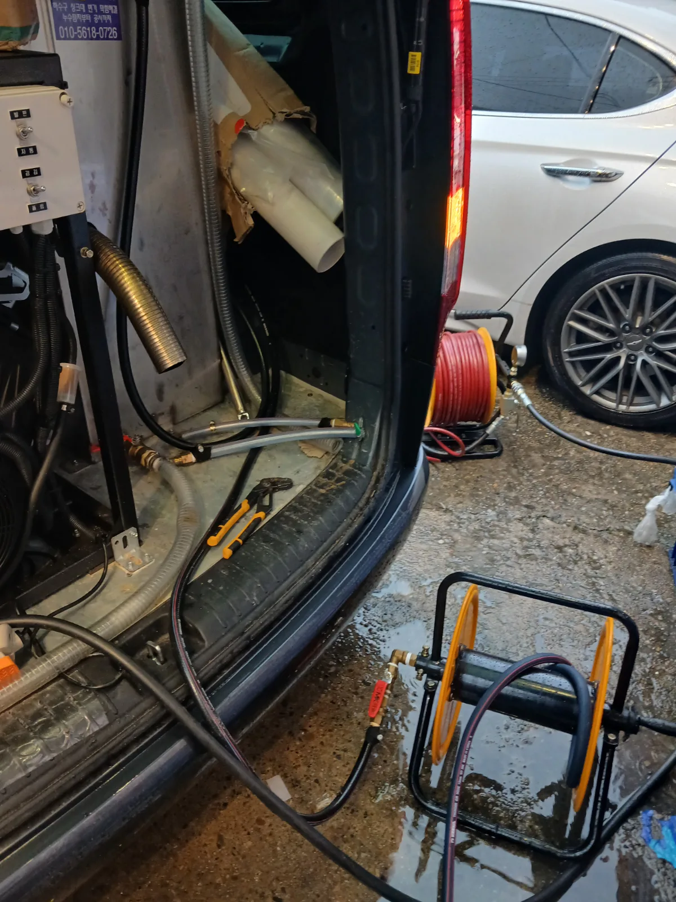

송파구 방이동 하수구막힘, 현장 도착 후 진단
식당 주방 싱크대에서 오수가 역류한다는 긴급 요청을 접수하고 전문 장비를 준비해 송파구 방이동 현장으로 신속하게 출동했습니다. 음식점 싱크대역류는 주방 운영을 즉시 중단시킬 수 있어 막힘 위치와 배관 상태를 빠르게 파악하는 것이 중요합니다.
숙련된 막힘 전문 기술자가 주방 싱크대부터 외부 배수 구간까지 순서대로 확인했습니다. 점검 과정에서 외부 집수정의 뚜껑을 열자 감자탕 국물과 기름 성분이 섞인 오수가 내부에 가득 차 있었습니다.
집수정에 오수가 가득 찬 것은 단순히 집수정만 청소하면 해결되는 문제가 아니었습니다. 집수정에서 외부로 이어지는 배수배관의 흐름이 막히면서 주방에서 배출된 오수가 빠져나가지 못했고, 결국 싱크대 방향으로 역류한 상태였습니다.
1단계: 증상 확인과 필요한 장비 작업
먼저 외부 집수정을 안전하게 개방하고 연결 배관의 위치와 배수 방향을 확인했습니다. 감자탕과 같은 기름진 국물이 반복적으로 유입되면 식은 유지방이 배관 벽면에 달라붙고, 그 위로 음식물 찌꺼기가 계속 쌓이면서 단단한 슬러지층을 형성합니다.
일반적인 관통 작업만으로 좁은 물길을 만들 경우 남아 있는 기름때 때문에 막힘이 빠르게 재발할 수 있습니다. 따라서 집수정을 작업구로 활용해 리지드 플렉스샤프트를 연결 배관 안쪽으로 투입했습니다.
회전하는 샤프트 체인으로 배관 벽면의 굳은 유지방과 음식물 슬러지를 반복적으로 분쇄하며 배관스케일링 작업을 진행했습니다. 장비 반응을 확인하면서 막힌 구간을 단계적으로 통과해 기본적인 물길을 확보했습니다.

2단계: 원인 구간 처리와 정상 작동 확인
샤프트 작업으로 막힘을 관통한 뒤에는 차량에 설치된 전문 고압세척 장비를 가동했습니다. 배관세척 호스를 집수정의 연결 배관에 투입해 강한 수압으로 분쇄된 기름때와 음식물 찌꺼기를 밀어냈습니다.
샤프트로 단단한 슬러지를 분쇄하고 고압세척으로 잔존 이물질을 씻어내는 복합 작업을 통해 단순 관통보다 넓은 배수 통로를 확보했습니다. 세척 과정에서 배출 상태를 계속 확인하며 집수정과 연결 배관 내부의 오염물을 정리했습니다.
마지막으로 주방 싱크대에서 충분한 양의 물을 흘려보내 싱크대부터 외부 집수정, 메인 배수배관까지 물이 막힘없이 빠지는지 확인했습니다.

작업 결과와 재발 방지 안내
외부 집수정과 연결 배관을 막고 있던 유지방 및 음식물 슬러지를 제거하면서 주방 싱크대의 배수 흐름이 정상적으로 회복됐고 역류 증상도 해결되었습니다.
국물류를 많이 사용하는 음식점은 일반 가정보다 배관 내부에 유지방이 빠르게 쌓일 수 있습니다. 감자탕 국물과 기름진 음식물은 가능한 한 별도로 처리하고, 싱크대 거름망과 기름받이를 꾸준히 관리해야 합니다. 배수 속도가 느려지거나 집수정의 수위가 평소보다 높아졌다면 완전히 막히기 전에 배관세척을 진행하는 것이 좋습니다.
신라건축설비는 송파구 방이동을 비롯한 서울 전 지역과 경기권에 신속하게 출동하는 싱크대막힘·싱크대역류·하수구막힘 전문업체입니다. 막힘 위치와 배관 구조를 정확히 진단하고 석션, 관통, 리지드 샤프트, 배관스케일링, 고압세척 등 현장에 적합한 전문 장비를 복합적으로 운용합니다.
가정의 생활 막힘뿐 아니라 음식점·상가·빌딩의 집수정, 공용배관, 메인 오수관 문제와 대형 배관세척 및 배관공사까지 자체적으로 대응할 수 있습니다. 단순히 일시적인 물길만 만드는 데 그치지 않고 배관 내부에 남은 원인까지 제거해 재발 가능성을 줄이는 것이 신라건축설비의 작업 원칙입니다.
최종 조치: 외부 집수정을 작업구로 확보한 뒤 연결 배관에 리지드 플렉스샤프트를 투입해 굳은 유지방과 음식물 슬러지를 분쇄했습니다. 이후 배관고압세척을 진행해 분쇄된 잔존 이물질까지 배출하고, 집수정과 주방 싱크대의 통수 상태를 최종 확인했습니다.
현장 방문 전 확인하는 비용과 작업 범위
신라건축설비는 현장 증상과 배관 구조를 확인한 뒤 필요한 작업과 예상 비용을 안내합니다. 단순 관통으로 해결되는지, 배관내시경·석션·고압세척 또는 추가 장비가 필요한지는 현장 상태에 따라 달라집니다. 출장비와 야간 작업비, 추가 장비 비용이 발생할 수 있는 경우 작업 전에 먼저 설명하고 동의를 받은 범위에서 진행합니다.
업체를 선택할 때 확인할 사항
무조건적인 ‘0원’ 표현보다 실제 작업 범위, 추가 비용 조건, 사용 장비와 사후 대응 기준을 확인하는 것이 중요합니다. 해결되지 않았을 때의 비용 기준과 작업 후 동일 증상 발생 시 점검 범위를 사전에 문의해두면 불필요한 분쟁을 줄일 수 있습니다.
송파구 하수구막힘 자주 묻는 질문
하수구막힘은 왜 반복되나요?
송파구 방이동 현장처럼 식당 주방 싱크대에서 물이 원활하게 빠지지 않고 오수가 다시 올라오는 역류 증상이 발생했습니다. 주방 배수 사용이 어려워 영업에 직접적인 불편이 생긴 긴급한 상황이었습니다. 증상은 원인이 현장마다 다를 수 있습니다. 배관 내부 기름 슬러지·생활 오염물·스케일이 충분히 제거되지 않았거나 오수관·공용배관 구간에 문제가 있으면 반복될 수 있습니다. 재발 시 막힌 위치와 배관 상태를 함께 확인합니다.
하수구가 역류하거나 물이 안 내려가면 하수구뚫는업체를 불러야 하나요?
바닥 배수구가 역류하거나 여러 배수구에서 동시에 물이 빠지지 않으면 단순 배수구 막힘보다 깊은 배관이나 공용배관 문제일 수 있습니다. 전문 장비로 원인 구간을 확인하는 것이 좋습니다.
여러 배수구가 동시에 막히면 공용배관이나 오수관 문제인가요?
동시에 여러 곳에서 배수 불량과 역류가 발생하면 메인배관·오수관·공용배관을 의심할 수 있지만 건물 구조마다 다릅니다. 배관내시경과 현장 진단으로 구간을 구분합니다.
하수구뚫는업체는 어떤 장비로 작업하나요?
현장에 따라 샤프트, 석션, 배관내시경, 고압세척 장비 등을 사용합니다. 단순 관통이 필요한지 배관 내부 세척까지 필요한지는 오염 상태와 막힘 원인에 따라 판단합니다.
하수구 고압세척은 언제 필요한가요?
기름 슬러지나 배관 내부 오염이 넓게 쌓여 반복 막힘이 생기는 경우 고압세척이 효과적일 수 있습니다. 모든 하수구막힘에 고압세척을 적용하는 것은 아니며 먼저 배관 상태를 확인합니다.
하수구막힘 비용은 어떻게 정해지나요?
막힌 위치, 배관 길이와 구경, 공용배관 여부, 내시경·샤프트·고압세척 등 장비 투입 범위에 따라 달라집니다. 추가 작업이 필요한 경우 진행 전에 범위와 비용을 안내합니다.
하수구막힘 서울·경기 출동지역
신라건축설비는 송파구 방이동 현장을 포함해 서울 25개 구와 경기도 31개 시·군의 배관 문제를 상담합니다. 현장 거리와 기사 배정 상황에 따라 출동 가능 여부를 먼저 안내드립니다.
서울 전 지역
강남구 · 강동구 · 강북구 · 강서구 · 관악구 · 광진구 · 구로구 · 금천구 · 노원구 · 도봉구 · 동대문구 · 동작구 · 마포구 · 서대문구 · 서초구 · 성동구 · 성북구 · 송파구 · 양천구 · 영등포구 · 용산구 · 은평구 · 종로구 · 중구 · 중랑구
경기도 주요 출동지역
수원시 · 용인시 · 고양시 · 화성시 · 성남시 · 부천시 · 남양주시 · 안산시 · 평택시 · 안양시 · 시흥시 · 파주시 · 김포시 · 의정부시 · 광주시 · 하남시 · 광명시 · 군포시 · 양주시 · 오산시 · 이천시 · 안성시 · 구리시 · 의왕시 · 포천시 · 양평군 · 여주시 · 동두천시 · 과천시 · 가평군 · 연천군